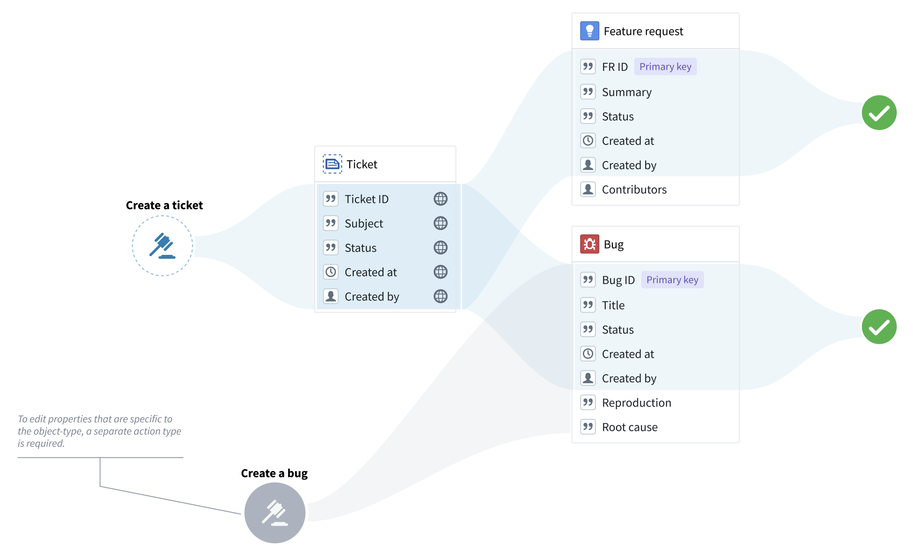
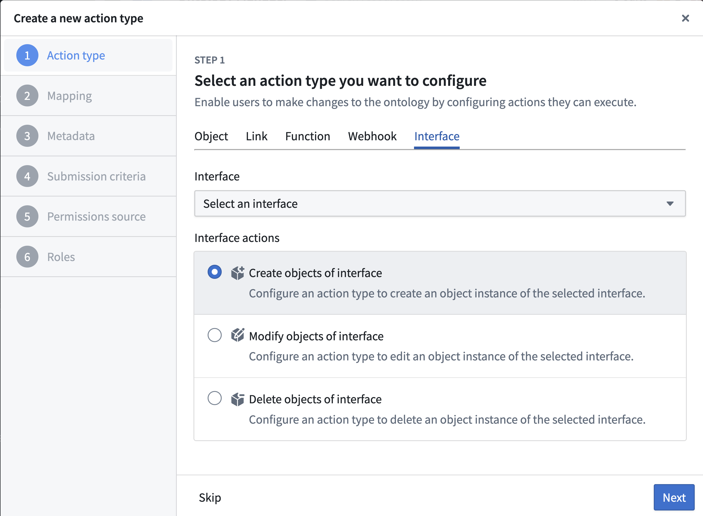
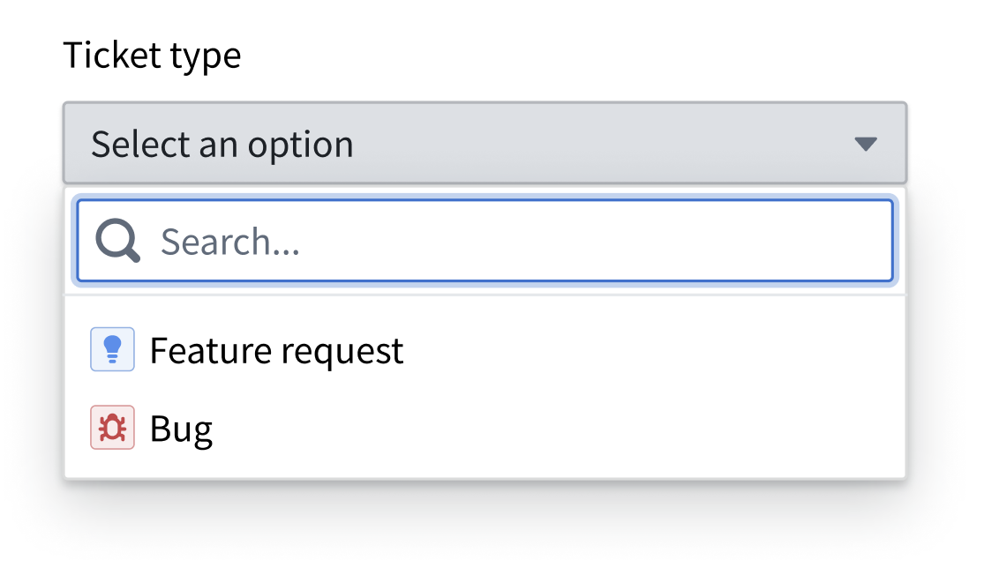
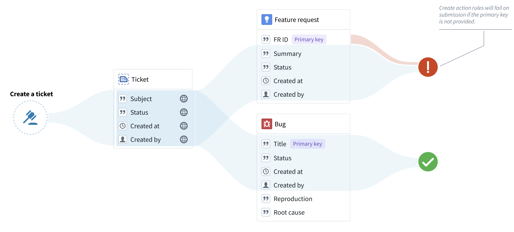
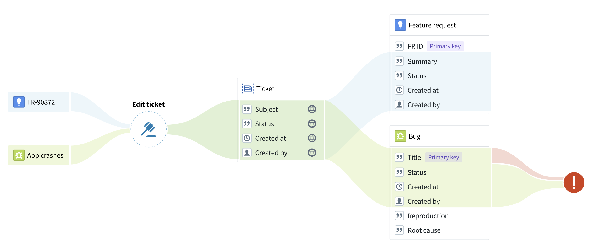

You can create generic actions that apply to all objects of a chosen interface. There are two main ways you can use interfaces from within actions:
Interfaces can also define interface action type constraints, which describe expected action capabilities that implementing object types can satisfy with concrete action types.
Action type constraints define an interface-level action contract; action rules define the edits performed when an action type is submitted.
Interface action type constraints are currently an Ontology Manager modeling and mapping feature, not an end-user application or Ontology SDK invocation surface.
:::callout{theme="warning"} Interface action submission criteria apply uniformly to all object types that implement the interface. Before you create an interface action, carefully review which users will have permission to create, modify, or delete objects across all object types that implement the interface. Learn more about establishing control over interface actions. :::
You can use interface action rules whenever the edits can apply to all the object types that implement the interface. In other words, you can use interface action rules only to modify the interface shared properties or to delete objects. For example, if âFeature requestâ and âBugâ are object types of the âTicketâ interface, you can use a âCreate a ticketâ action type to create bugs and feature requests, but you cannot create any property types that are specific to bugs or feature requests.

To set up a new interface action type, choose Action type from the New menu in Ontology Manager.

Because the action type is only associated with an interface, an âObject typeâ parameter will be automatically generated to indicate the object type that should be created. If using a form or a table, the user will be prompted to pick an object type from a list.

Note that objects cannot be created without a primary key. Therefore, any object type without a primary key assigned in the rule will fail during submission. To avoid failures of this type, make sure that both the interface and the Create rule include an interface property that can be used as the primary key in the object types that implement the interface.

"Modify" rules on an interface can modify any object of the configured interface. An âinterface referenceâ parameter will be generated, constrained to the selected interface. The "interface reference" parameter is similar to the âobject referenceâ parameter, with the exception that the "interface reference" parameter shows objects of any type that implements the interface. If using a form or a table, the user could then pick an object from a list.
Note that primary key values cannot be modified by any action type. Therefore, an action will fail on submission if the action tries to modify a primary key property for a selected object type. Always ensure that the action rule does not modify properties that are likely to be used as a primary key by some of the object types that implement the interface.
In the example below, the âTitleâ property is incorrectly used as the primary key for the âBugâ object type. The âEdit ticketâ action will fail on submission because the action attempts to change the primary key of the bug.

"Delete" action rules can have an "interface reference" parameter assigned to them, instead of an object reference parameter. This interface reference, constrained to a specific interface, will indicate the object to be deleted. If using a form or a table, the user could then pick an object from a list.
"Create interface link" rules allow you to create links using an interface link constraint defined on an interface. To configure a "Create interface link" rule:
Optionally, you can also configure the source and destination objects manually if you do not want to use the parameters autogenerated by actions. These can be:
:::callout{theme="warning"} If there are multiple concrete link implementations on the object type for the link constraint, the action will fail. Additionally, creating a one-to-many link modifies the foreign key on the many side of the relationship. Ensure there are no conflicts if your action type also modifies the foreign key using a "Create object" or "Modify object(s)" rule. :::
"Delete interface link" rules allow you to delete links using an interface link constraint defined on an interface. To configure a "Delete interface link" rule:
Optionally, you can also manually configure the source and destination objects instead of using the autogenerated parameters. These must be parameters referencing existing objects â either interface reference or object reference parameters.
:::callout{theme="warning"} If there are multiple concrete link implementations on the object type for the link constraint, the action will attempt to delete all the concrete link implementations. :::
Actions created with interface action rules can be applied to objects whose object type implements the interface, just like any object-specific action type. For a given object, all object-type-specific and interface-based actions that can be applied to that object will appear in the action dropdown.
Interface action rules follow the same permissions as object action types.
See the documentation on action type permissions for more details.
As support for interface action rules and reference parameters expands, availability will vary across the Palantir platform.